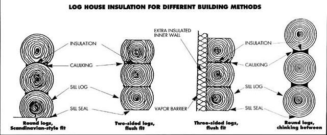
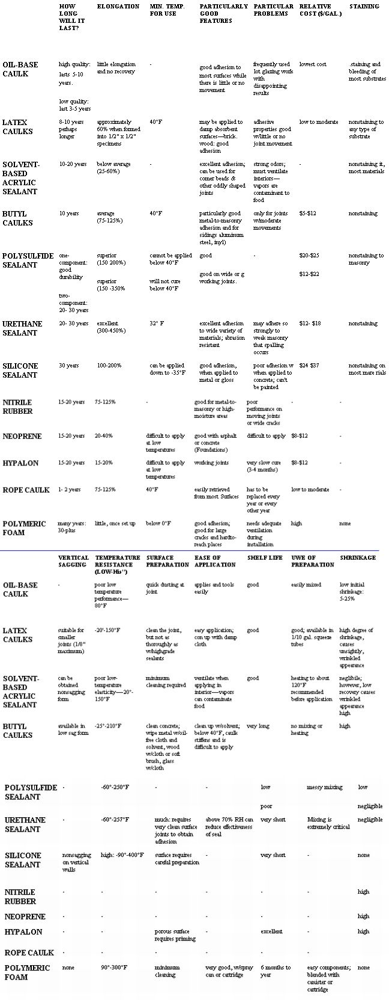

IT MAY COME AS A SURPRISE TO SOME, especially owners, but many log houses should be insulated to make them energy efficient. A look at the R-values will tell one reason why. Dry wood can have an R-value of up to 1.25 per inch. Even lowquality insulation has a value double that and more.
Another problem not often considered is moisture. Where does the moisture in the house go when the outside wall is solid wood? It still tries to get out, and might if there are cracks in the logs.
The propensity for moisture-laden air to move outside has been utilized in the past to make a log house better insulated. In the far north, where winter temperatures may stay below freezing for months, it was a common practice to seal the house from the inside. This was done by putting several containers of water on the stove and bringing them to a boil. The vapor traveled to the outside thr ugh the cracks. It immediately froze on contact with the outside air, effectively scaling the house until the outside air temperature again was above 32°F This cut down on drafts and made for a snug house, at least until the weather warmed up.
Logs have another property that helps explain why log houses don't seem to be as cold as their R-value would indicate: They are capable of storing heat. Logs in a house wall will absorb beat up to the temperature of the air in the house. When the house temperature is lowered-at night, for example-they give back heat into the rooms until the temperature is again equalized. Unlike a block or a stone wall, logs can be two temperatures simultaneously, one on either side.
Where basic insulation for a log house is needed, even if none is required elsewhere, is between the logs. No matter what type of log construction is used-round fitted, flattened, three-sided, or round with chinking-a thin layer of insulation should be put between each log and those above and below it. This fills irregularities between the logs and closes cracks open to the outside. Caulking or "chinking" is then done on either side of the insulation.
The size of the logs makes a difference. Many modem log houses are made of logs 8" or less in diameter. Two-sided and three-sided logs are often only 6" thick. When placed in a wall, there may be only 3" or 4" of contact surface between the logs. This contact is the thickness that should be considered when thinking of additional insulation. Not only is the joint between logs thinner than the Mgt but that is the place where there will be leaks in the wall if any exist.
Even houses made of turned logs (logs turned to a given diameter in a large lathe, then grooved with a machine to give a very tight fit) need insulation and caulking where logs meet. This type of construction is a machinemade variation of the old Scandinavian system of building log houses. Most of these houses use logs turned to 20" or less in diameter, with only about 8" of thickness where the logs rest on each other.
Some log-house builders still hand-fit the logs in the same Scandinavian style. They usually use logs from 20" to 36" in diameter, and will have a thickness of 12" or more where they join. This type of construction is usually done only on contract.
Factory-built log houses are most common today. The logs may be only 6" to 8" thick, and are often squared on two or more sides for ease in construction. One maker of log-home kits even starts with 8 X 8 timbers, running them through a machine that rounds one side (for the outside of the cabin), and puts a tongue and groove in the top and bottom for a tight fit. The inside surface of the log is dressed smooth so that it looks like lumber. This construction needs a strip of insulation between the "logs" and caulking in the crack between the logs on both the inside and the outside.
Some log-home builders use hand-peeled logs, without doing anything else to them. The bark of the log is removed by a man wielding a large drawknife. then the logs are fitted into the house by notching the ends so there will be as small a crack as possible between each set of logs. Usually the logs are no more than 8" in diameter on the small end and no larger than 14" in diameter on the large end. As a wall is built, the large end of one log is placed atop the small end of another to get a close fit between the logs. Once the logs have been fitted for a house at the factory, they are numbered and trucked to the home site, where they are reassembled.
When the house is up, the gaps between the logs are stuffed with fiberglass insulation; then a vinyl material that won't shrink away from the logs is applied, sealing the crack. The wall between the logs may be only 3" thick, and filled with a material that has a lower R-value than the logs themselves, so the insulation value is low.
Log houses often differ from frame houses in the roof. In order to get the most rustic feeling from a log house, the roof is often open beam. In that case the insulation must be put on top. In the good old days, sod was often the material used, with up to a couple of feet being placed on top of the house. This entailed a heavy roof structure, as sod can weigh up to 75 pounds a cubic foot. Even though sod has approximately the same R-value as fiberglass, nowadays it will probably be more expensive.
What we might term as rustic or old-fashioned was, more often than not, done for reasons of sheer necessity by our forebears.
Log houses were built because there were Moore than enough trees, and the trees needed to be cleared from the land to grow food. Sod was also plentiful, especially in places where there was some prairie. It was there for the taking. A couple of men with a saw and axes and a flat shovel, often carved from a split log, could build a solid house in a couple of days, with the expenditure of nothing more than sweat.
They also weren't concerned about fuel to keep the place warm. If it was cold, they built the fire up more. "Energy efficiency" wasn't in their vocabulary. Neither was "insulation", except in the far north country where tundra moss was used to stuff the cracks between logs or stones, and was often applied in a thick layer on the roof.
During experiments on the insulation value of indigenous building materials, University of Alaska engineers discovered that dried tundra moss has a higher insulation value than most manufactured insulations. Of course, unless you live on the tundra, the cost of obtaining the moss Puts it out of reach. It is also very flammable and would probably be banned by most fire codes.
Most log houses use insulation only be tween the logs. However, you must do something to increase the insulation along the logs to make your cabin truly an energy-efficient house. This means building a wall on the inside of the log wall. This should be thick enough to provide energy efficiency. It should also have a vapor barrier on the warm (room) side to reduce moisture flow into the log wall as much as possible. Once the vapor barrier is in place, the wall can be finished as desired. The barrier is an extra expense, but if the log walls of the house are as thin as some described earlier, it may be necessary for the conservation of energy.
A roof on a log house has the same problems as one on a frame house, and should be treated the same way. In order to keep the rustic effect and utilize the efficiency of modem insulation, some log-home owners have insulated their roof with urethane foam and then added a layer of sod to complete the illusion of a rustic dwelling. The same problems and benefits apply here as they do for a regular framed roof. The point is to get the highest possible insulation value for the money spent.
Reprinted from Home Insulation: Do It Yourself & Save As Much As 40% (Storey Communications).
ONE OF THE MOST COST-EFFECTIVE and energy-conserving measures you can take is to insulate duct or pipe runs in the unheated areas of your home. By not insulating these conduits you are essentially delivering heat that you've paid for to areas of your house you never use. One very important note: Never place duct or pipe insulation within three feet of the heating system, exhaust flues, or any other hightemperature areas.
To insulate, install vinyl or foil-backed fiberglass duct insulation to all heatingsystem supply ducts. You can also use reguht-faced fiberglass insulation, which is less expensive and has a higher R-value (a measure of the ability to retard heat flow; the higher the number, the better the insulation). To determine how much insulation you need, first measure the distance around each section of duct and multiply that by the total length. Order about 30% more than the amount calculated to account for the overlaps needed for fastening.
Before you insulate, be sure to seal all air leaks in the system with duct tape and/or a high-temperature caulk such as silicone. Then, cover the supply ducts with insulation and secure it using clinch-type staples (preferred), wire, or tape. Although not as long-lasting as staples, duct tape is easier to install. The tape should be wrapped completely around the duct and overlapped. The backing of the insulation must be on the outside surface. Exposed fiberglass and all joints between pieces of insulation should be covered with tape.
Damper control handles must be left in an accessible and operable position. Any labels on the ducts should be transferred to the outside of the insulation. Do not insulate your return ducts.
To insulate your pipes, follow these rules:
For hot-water systems, install "elastomeric or urethane rubber pipe insulation with a suggested minimum R-value of 6-only on supply pipe. This insulation may not be used in applications where the temperature of the pipe exceeds 200°F (such as on steam pipes). For steam systems, install molded fiberglasspipe insulation with a minimum recommended R-value of 6 on all supply pipes. Before you purchase the insulation, carefully measure the outside diameter and lengths required. Remember to add a little for waste at joints. Before installation, check for leaks in the system. If you find any, repair it before you proceed. To install, place pipe insulation over the pipes, and seal with either glue, duct tape, or appropriate fasteners. Exposed ends of insulation sections at joints should be tightly scaled to eliminate air flow beneath the insulation.
TUNE UP YOUR OIL BURNER!
WHEN YOU SCHEDULE A TUNE-UP, ask your service company about reducing the firing rate of the burner. Most burners are oversize, and significant savings can be achieved by downsizing the nozzle.
The burner nozzle controls the firing rate (the rate of oil flow in gallons per hour). Only your fuel supplier has the records necessary to determine if this is applicable.
Make sure your serviceperson leaves a tag attached to the heating system which records the final combustion efficiency, smoke reading, percent carbon dioxide (CO 2 ), net stack temperature, and any other work done. Combustion efficiency indicates what percentage of fuel your burner turns into heat.
Make sure your tune-up also includes the following 13 key checks for a winter-ready oil burner:
combustion chamber cleaned thoroughly or replaced heat exchanger cleaned oil-pump pressure checked and regulated, if needed oil filter replaced all operating and safety controls checked pump and blower motors checked and oiled barometric draft regulator checked, adjusted, or replaced, depending on its condition burner fan, motor, electrodes, and transformer cleaned and lubricated oil pump bled (if necessary) nozzle replaced (you should do this every year) leaks into the unit sealed potential of "baffling" installation assessed (important in older units) final combustion tests completed; tag attached to the heating system which shows the final combustion efficiency.
SINCE AS MUCH AS 80% of air leakage occurs in areas other than windows and doors, caulking is all absolute winter necessity. In addition to checking windows and doors, be sure to inspect the areas where:
the wooden sill of We home meets the foundation dryer vents and fan covers pass through the wall furnace vent stacks meet the exterior any air leaks in the basement might lurk plumbing pipes and telephone wires enor We home any two different outside materials meet the fireplace chimney meets the siding. As a general rule caulk where a pemanent sea! is desired. and weather-strip when doors and windows must be opened.
After determining which areas need attention, it's important to choose the right type of caulk for the job. Before buying or using a particular caulk, read each label carefully for storage and application temperatures. Check the descriptions below, then refer to the chart to determine We but caulk for the job. While the factors may be of varying concern depending on personal preference (amount of money you're willing lengths you are willing to go to find a certain caulk, time you wish to spend redoing the job in a few years), it is important to check the temperature resistance of any caulk if you live in a very cold climate.
OIL-RESIN BASE. This is often the 01 least expensive. It is not particulardurable, and tends to shrink and harden It call be painted. This may harden, It can be painted, This ma terial is found in most stores. It should not be used for long-term application.
LATEX MOM This will bond to mom sun faces. It is more durable than resin-based material, and also paintable. Some shrinkage will occur. Adequate, but not the best material available.
BUTYL RUBBER. This paintable material will bond to most surfaces. It is more durable than the others, but it also shrinks. This is often the best choice for use on massonry surfaces, but not on moving joints or places where two different materials meet.
POLYVINYL ACETATE. Ths will bond to most surfaces and is more durable, but it also shrinks and hardens, This sealant is surpassed by ither compounds.
NITRILE RUBBER. This bonds well to metal and masonry hilt not to painted materials. It is durable and paintable, but large amounts of shrinkage are reported. Its primary use is For high moisture areas.
NEOPRENE RUBBER. This will bond to most surfaces and is expensive but durable and paintable. Moderate shrinkage is reported. This is especially good for use in concrete walls and foundations.
SILICONE SEAL. This will bond to most surfaces except concrete. It is very e xpensive and very durable boll not paintable. Little shrinkage is reported. It remains very flexible. This is an excellent caulk for most jobs.
PULYSULFIDE. This needs a primer to bond to surfaces. It is expensive and very durable, and little shrinkage is reported. This is difficult to work with, however, and is toxic until cured. It can dry out in add climates.
POLTURETHANE. This will bond to most surfaces. It, too, is expensive, very durable, and paintable. Little shrinkage reported.
NYPALON. This requires priming for use on porous materials. It is expensive, very durable, and paintable. Little shrinkage is re ported. An excellent caulk, easy to work with but, again, not always readily available.
Now that you've found the correct material for the job, you're on to the easy part, caulking your house for winter. Here's how:
Before installing caulk, remove all loose material and dirt from the crack, or the caulk won't adhere to the surface. Men caulking a wide crack (3/8" or greater), stuff it to within a fraction of an inch of the surface with a filler material urethane tan oakum a fiberglass batt) and then apply caulking material. Cut off the tip of the nozzle on the tube at an angle so that it gives you a bead of caulk no wider than you need. Next, pierce the inner seal of the cartridge. If necessary, smooth the newly applied bead of caulk immediately after applying it with a tool like a putty knife, or your fingers. You will soon acquire a technique that allows you to apply the caulk to the crack firmly and smooth it to an acceptable finish in one pass of the caulk gun. Caulk should adhere properly to the surfaces around the crack. Problems of inadequate bonding can be caused by poor cleaning of the crack area, incorrect caulk type, or improper placement. If the caulk that seals your storm is drying out or missing, caulk the top, sides, and bottom of the storm-window frame from the inside (between the sash and storm). Leave the weep holes at the bottom of your storm window unplugged: they allow excess moisture to drain out.
|
|
|
 |
|
|
 |
|